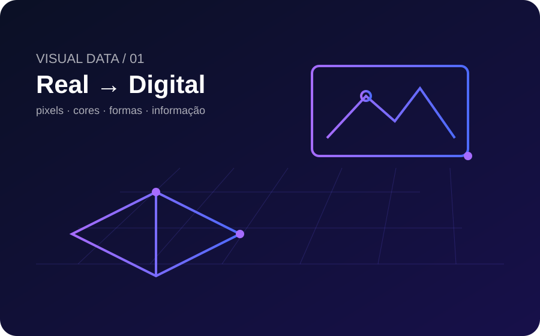

Representar
Estudar como objetos, cores e formas podem ser transformados em informações digitais, como pixels e valores de cor.
Aqui registro os principais aprendizados, reflexões e descobertas da disciplina ao longo do semestre.

Uma visão inicial sobre a área que conecta computação, matemática e percepção visual.
Estudar como objetos, cores e formas podem ser transformados em informações digitais, como pixels e valores de cor.
Modificar, melhorar e transformar imagens usando técnicas computacionais.
Extrair informações e encontrar padrões presentes em imagens e vídeos.
Criar novas representações visuais por computação gráfica e Inteligência Artificial.
Uma câmera ou sensor registra informações da cena real.
A informação passa a ser armazenada como dados, pixels e cores.
Algoritmos modificam ou analisam esses dados visuais.
O computador apresenta uma imagem ou informação extraída dela.
Registros, resumos e reflexões de cada aula da disciplina.
Introdução à Computação Visual: objetos, cores, pixels, captura e processamento.
Ler conteúdo →Por que imagens geradas por inteligência artificial podem apresentar erros?
Ler conteúdo →Conteúdo será publicado em breve.
Aguardando →“Por trás de uma imagem que parece simples, existe uma grande quantidade de informações que o computador precisa representar e processar.”
— Reflexão inicial sobre a disciplina